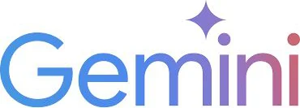
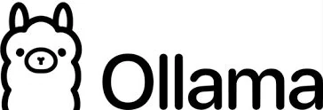
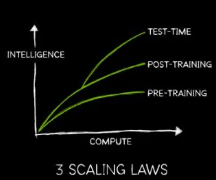
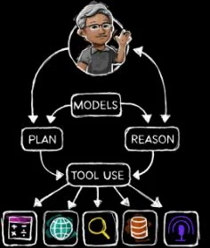
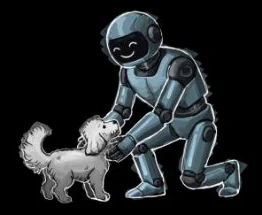

Spring AI
- Seamless AI integration into existing Spring Boot applications.
- Connects enterprise APIs and data with AI models.
- Uses proven principles of the Spring ecosystem.
- Core concept: ChatClient (similar to RestClient, JdbcClient, …)
![Hospitality service: creating memorable experiences, delivering more than expected. Definition: the provision of accommodation, food, beverages and related services to guests, with a strong focus on customer satisfaction, comfort and experience. Key characteristics: intangible, customer-centric, simultaneous production and consumption, perishable. Categories: accommodation, food and beverage, travel and tourism, recreation and entertainment, event and conference services. Levels of service: self-service, assisted, full, personalized or luxury. Core elements: professional behavior, communication skills, attention to detail, responsiveness, empathy and friendliness. Example hotel stay: the room is the product, check-in experience and staff attitude are the service.](assets/img/slides/hospitality-service.jpg)

Moving from paper/manual to digital records

Streamlining processes with digital tools

RPA* and basic AI assistants for efficiency

AI insights guiding decision-making

Autonomous agents that plan, act, collaborate, and optimize outcomes
* RPA: Robotic Process Automation

![Open source applications and systems for hospitality services, by category with product logos: property management, channel manager and distribution, booking engine, CRM and guest management, point of sale, payment and billing, content management, e-commerce, analytics and business intelligence, communication and collaboration, infrastructure and DevOps, database and data management, search and logging, security, cross-cutting integration. Open source requires proper planning, technical expertise and ongoing maintenance.](assets/img/slides/oss-systems.jpg)

Java is the language of choice for AI development: 50% of organizations use Java to code AI functionality — surpassing both Python and JavaScript.
Which programming languages does your organization use to code AI functionality? Select all that apply.
Figure 21 – 50% of companies that build AI functionality internally build it with Java.


Development Platforms


Brain: LLMs


Agent and Agentic Frameworks
Backend


Web UI


MCP Clients


Messengers / Community
Frontend / UI
![AI or DIE, hospitality service: impact and future. Adopt AI: personalized, efficient, profitable, with dynamic pricing, robotic concierge and data analytics. DIE: disrupted, irrelevant and extinct. Disrupted: manual processes and service breakdown, slow operations, high costs, operational chaos. Irrelevant: outdated guest experience, unmet expectations, poor reviews, market share loss. Extinct: business closure, complete market obsolescence, irreversible decline, the end. Disclaimer: visual representation for strategic discussion.](assets/img/slides/die-hospitality.jpg)


AI offices

 Google Workplace
Google Workplace
AI agents
 ChatGPT
ChatGPT


AI dev copilots


AI browsers

Compute is data
AI becomes agentic
Physical AI takes leap AI learns laws of nature
AI learns laws of nature Open models reach frontier
Open models reach frontierhttps://s201.q4cdn.com/141608511/files/doc_downloads/2026/01/05/JHH-CES-2026-FINAL.pdf
![The future of hospitality, 100% agentic AI operated: end-to-end service, zero human operations, maximum guest experience. Six steps from discover and plan to post-stay. An agentic AI orchestrator connects travel concierge, booking, communication, payment, operations, personalization, experience and analytics agents, backed by security, sustainability, revenue, HR, compliance and innovation agents. Humans in hospitality, where it matters most: bartenders, chefs, personal trainers, guest relations specialists, local guides. AI runs the hotel, humans create the magic.](assets/img/slides/future-hospitality.jpg)

Villefranche-sur-Mer, France 2025
Arrow keys select · Enter opens · Esc closes